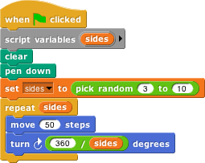
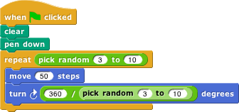
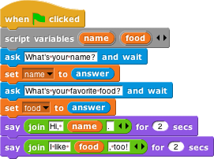

Sometimes you need a variable in your script, but you don’t want it to step through consecutive integer
values as in the for block. A more general way to handle variables uses the block
to create a variable, and the block
to give that variable a value. Both of these blocks are in the Variables palette. Here’s an example:

The script variables block creates a variable called sides (click on the orange
"a" to change the name) that can be used throughout this script. (Each time you click the
green flag, a new variable is created, and it exists only during that time through the script.)
The set block says what value the variable should have. In this case, Snap! will pick a random
integer value between 3 and 10 (inclusive). (The pick random block is in the Operators palette;
note that we changed the first input from 1 to 3.) The script will draw a regular polygon with that number of
sides. The value of sides is used twice, first in the repeat block to say how many
times the move-and-turn combination should be done, and again in computing the angle
through which to turn for each side.
Try running the script (by clicking the green flag) several times to see what shapes it draws.
Self-test question: Why did we start the range of possible random numbers at 3?
Self-test question: Where did the formula come from?
We needed the script variable in this script because the randomly chosen number is used twice. If it had been
used only once, we could have put the pick random block directly in the script, like this:
Self-test question: Try to explain before you run the script below what could go wrong if we just put
the pick random block in the script twice:

Another place where script variables can be useful is in a program that interacts with the user.

This script uses several blocks we haven’t used before. The ask and wait command and
the answer reporter are in the Sensing palette. Join is in Operators. If you run the
script you should be able to figure out what they do.
Note that this script has two script variables. The script variables block has a little right-facing arrowhead at the end:
If you click the arrowhead, a second orange variable oval will appear. Also, there will be left- and right-facing arrowheads. You can click these to adjust the number of variables you need.
The join block also has arrowheads to control the number of input slots it has. In the text string inputs, both in join and in the ask blocks, the pale brown raised dots represent spaces. The brown dots don’t appear in the text on the stage when the script is run. They’re in the input slots so that you can easily see if there are multiple spaces in a row:
and also so that you can distinguish between a completely empty input slot and one that has a space in it: